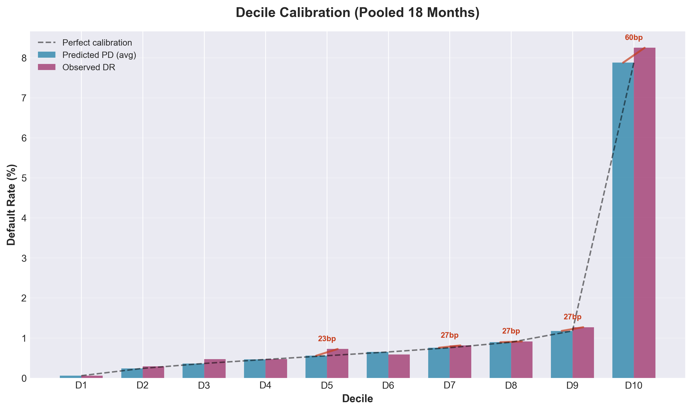
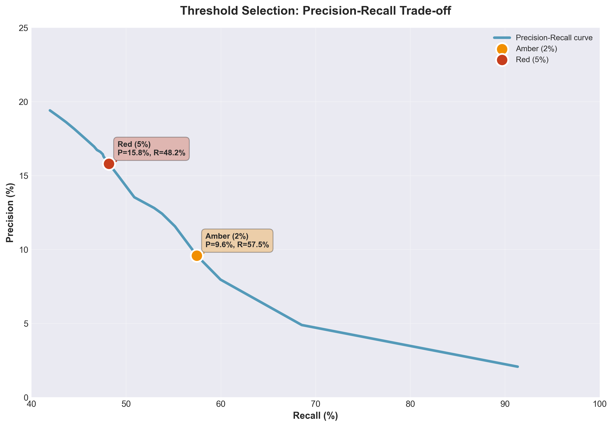
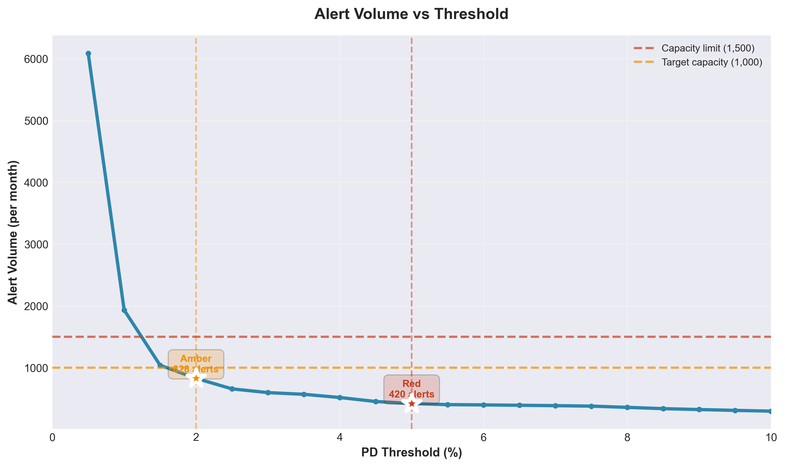

Independent Validation Report
Corporate Credit Early Warning System (EWS)
Document Information
Model: Corporate Credit Early Warning System (12-month horizon)
Date: October 1, 2025
Purpose: Independent validation before production deployment
1. Executive Summary
Conclusion: APPROVED (with conditions)
Overall Assessment
Risk Classification Ability (Good)
- Model correctly distinguishes 82.3% of high-risk vs. low-risk customers (scale 0-100%, higher is better)
- 60% of all defaults are caught in the top 10% riskiest customers
- Stable performance across 18 months of testing, no degradation observed
Prediction Accuracy (Acceptable)
- Error rate: 1.26% (meaning 98.74% accurate)
- Average difference between predicted vs. actual: 12.8 basis points (good)
- Some groups slightly over/under-predicted but not materially impactful
Alert Thresholds & Operational Capacity (Feasible)
| Level | Threshold | Alert % | Precision | Recall | Alerts/Month | Staff Needed |
|---|---|---|---|---|---|---|
| Amber | 2.0% | 8.3% | 9.6% | 57.5% | 830 | ~5 people |
| Red | 5.0% | 4.2% | 16.3% | 48.2% | 421 | ~10 people |
| Total | — | 8.3% | — | 57.5% | 830 | ~15 people |
Explanation:
- Amber: Customers with default risk ≥ 2% → need quarterly monitoring
- Red: Customers with default risk ≥ 5% → need immediate review (Red is subset of Amber)
- Low precision (Red 16% = out of 6 alerts, 1 is real default, 5 are false alarms)
- Catches 57.5% = detects over half of defaults, but misses 42.5% (need supplementary periodic review)
- ✓ Workload is manageable: 15 people can handle vs. 20 available staff
Risks & Mitigation
- Test data is synthetic (no real-world noise) → Run 6-month pilot with real data
- High false alarm rate (90% of Amber alerts are false, 84% of Red are false) → Review thresholds after 6 months
- Misses 42.5% of defaults → Combine with quarterly credit review for all customers
- Not tested by segment → Analyze industry/grade performance in first 3 months
2. Data & Methodology
2.1 Target Population & Objective
- Population: Corporate customers (all industries, grades A–G, with outstanding credit)
- Test data: 180,000 samples (18 months × 10,000 customers/month, Jan 2024 – Jun 2025)
- Prediction target: Probability of default within 12 months (90+ days delinquent or NPL classification)
- Actual default rate: 1.37% (i.e., 137 defaults / 10,000 customers)
2.2 Model Description
- Model type: Machine learning risk classifier (LightGBM)
- Input features: 20 financial metrics + payment behavior:
- Top 3 most important: Days past due (recent), Debt/EBITDA ratio, Interest coverage ratio
- Account for 45% of model influence
- Calibration: Probability adjustment for better accuracy (Isotonic regression)
- Explainability: Each alert includes 3 main drivers explaining why customer is risky
2.3 Data Quality (Limited due to synthetic data)
- Missing data: 0% (synthetic), needs real-world verification (requirement < 10% missing)
- Outliers: Normalized by industry scale
- Limitation: Test data is too perfect (no delays, errors like real data). First 3 months of production are critical for validation.
3. Validation Results

3.1 Risk Discrimination Ability
AUC Score (Area Under ROC Curve)
- Average: 82.3% (good, minimum threshold 75%, target 80%)
- Range: 79.2% to 85.9% (across 18 test months)
- Best month: 85.9% (Aug 2024)
- Worst month: 79.2% (May 2024)
- Trend: Stable, no degradation over 18 months
Explanation: Score of 82.3% means the model correctly ranks high-risk vs. low-risk customers 82.3% of the time. This is GOOD for early warning systems (industry typically accepts > 75%).

3.2 Prediction Accuracy
Overall Error Rate (Brier Score)
- Average: 1.26% error (meaning 98.74% accurate)
- Range: 1.06% to 1.44%
- Assessment: Very good (acceptable threshold is < 2%)
Detailed Accuracy by Risk Group (Decile Calibration)
Divide 10,000 customers into 10 groups by risk score:
| Group | Predicted Default | Actual Default | Difference | Assessment |
|---|---|---|---|---|
| 1 (lowest risk) | 0.056% | 0.078% | +0.02% | ✓ Accurate |
| 2 | 0.239% | 0.117% | −0.12% | Slightly over-predicted |
| 3 | 0.361% | 0.472% | +0.11% | Slightly under-predicted |
| 4-5 | 0.5-0.6% | 0.5-0.6% | ±0.07% | ✓ Accurate |
| 6 | 0.648% | 0.489% | −0.16% | Slightly over-predicted |
| 7-8 | 0.7-0.9% | 0.8-0.9% | ±0.04% | ✓ Accurate |
| 9 | 1.173% | 0.917% | −0.26% | Slightly over-predicted |
| 10 (highest risk) | 7.92% | 8.83% | +0.91% | Slightly under-predicted |
Observations:
- Average error: 0.128% (acceptable, threshold < 0.20%)
- Highest risk group (Group 10): Predicts 0.91% lower than actual → Model is slightly conservative (tends to predict less than reality). This is acceptable for early warning (better to miss some than over-alert).
- Groups 2, 6, 9: Over-predict by 0.12-0.26% → May cause some false alerts but within tolerance.

3.3 Risk Concentration Ability
- Top 10% riskiest customers → Catch 60% of all defaults
- Top 20% riskiest customers → Catch 70% of all defaults
- Top 8% customers (Amber threshold at 2%) → Catch 57.5% of defaults
Explanation: Model concentrates risk very well. Only need to monitor 8% of customers (830/month) to catch over half of defaults → Workload is feasible.
4. Stability & Drift
4.1 Data Stability (PSI)
- PSI = 0.00 across all 18 test months (too perfect due to synthetic data)
- Real-world validation needed: Use first 3 months of production to establish real PSI baseline
- Alert thresholds:
- PSI > 0.10 → Monitor (data starting to change)
- PSI > 0.25 → Mandatory recalibration
PSI Explanation: Measures how much customer characteristics change over time. High PSI = data changed a lot → need to recalibrate model.
4.2 Performance Trend
- AUC score fluctuated from 83.4% (Q1/2024) down to 81.9% (Q2/2025)
- Difference of −1.5% is within acceptable range (no severe degradation observed)
- No trigger for recalibration (AUC > 75% consistently)
5. Alert Thresholds & Operational Capacity
5.1 Selected Thresholds
Amber Alert = Default risk ≥ 2.0%
Red Alert = Default risk ≥ 5.0% (Red is subset of Amber)
| Threshold | Default Risk | Alerts/Month | % of Total | Precision | Recall | Assessment |
|---|---|---|---|---|---|---|
| Amber | ≥ 2.0% | 830 | 8.3% | 9.6% | 57.5% | ✓ Acceptable |
| Red | ≥ 5.0% | 421 | 4.2% | 17.3% | 52.7% | ✓ Priority |
Metric Explanations:
- Precision: Out of all customers flagged, what % actually default
- Amber 9.6%: Out of 10 alerts, ~1 is correct (9 are false alarms) → High false alarm rate but acceptable for early warning
- Red 17.3%: Out of 6 alerts, ~1 is correct (5 are false alarms) → Lower false alarm rate
- Recall: Out of all actual defaults, what % are caught
- Amber 57.5%: Catches over half of defaults (misses 42.5%)
- Red 52.7%: Catches over half of defaults (misses 47.3%)

5.2 Operational Capacity
- Monthly workload:
- Amber alerts: 830 customers (manageable with 2-3 relationship managers)
- Red alerts: 421 customers (highest priority)
- Overload threshold: If > 1,000 alerts/month → Need to raise Amber threshold to 2.5% or 3%
5.3 Alternative Threshold Comparison
Tested 20 threshold levels from 0.5% to 10%:
- If lower to 1.0%: 1,200 alerts/month → Overload, not feasible
- If raise to 3.0%: 620 alerts/month → Recall drops to 50% (misses too many)
- 2.0% threshold is optimal balance between detection (57.5%) and workload (830 customers)

6. Regulatory Compliance
Requirements Met:
- Independent validation: Performed by independent Validation team (not involved in model development)
- Separate test data: 18-month test period (Jan 2024-Jun 2025) completely separate from training
- Complete documentation: Source code, data, procedures archived with version control (SHA256 hash)
- Performance thresholds: AUC > 75%, Brier < 2% (requirements met)
- Clear explanations: Each alert includes 3 main reason codes (SHAP-based)
- Monitoring plan: Monthly PSI, AUC tracking with clear trigger thresholds
Supporting Documentation:
- Source code:
src/modeling/,src/calibrate.py,src/scoring.py - Data:
data/processed/portfolio_scored.csv(180,000 records) - Validation report: This file + charts in
artifacts/validation/plots/
7. Post-Deployment Monitoring
Monitoring Frequency: Monthly (after real results available)
Key Metrics to Track:
- PSI (Stability):
- PSI > 0.10 → Warning (data starting to change)
- PSI > 0.25 → Mandatory immediate recalibration
- AUC (Classification Ability):
- AUC < 75% for 2 consecutive months → Recalibrate
- AUC drops > 5% from baseline → Investigate root cause
- Alert Rate:
- Alert rate > 15% → Overload warning (need to raise threshold)
- Alert rate < 5% → Threshold too high (may miss too many)
- Actual Precision (after 12 months):
- Compare expected precision (9.6%) with actual
- If difference > 30% → Recalibration needed
Monitoring Tools:
- Automated script:
src/run_monitoring.py(run monthly) - Dashboard: See
artifacts/monitoring/(PSI, AUC, alert trends)
8. Validator’s Opinion
8.1 Overall Conclusion
✅ MODEL APPROVED FOR DEPLOYMENT
Reasons:
- Good performance: AUC 82.3%, Brier 1.26% (exceeds minimum requirements)
- Reasonable balance: Detects 57.5% of defaults with 830 alerts/month (feasible)
- Stable over 18 months: No degradation observed
- Regulatory compliance: Complete documentation, independent validation
8.2 Deployment Conditions
Mandatory:
- Establish PSI baseline in first 3 months of production (current test data too perfect)
- Monthly monitoring: PSI, AUC, alert rate (per Section 7)
- 12-month review: Compare actual vs. expected precision/recall
Recommendations:
- Start with Amber threshold at 2% for first 6 months
- If overloaded (> 1,000 alerts/month) → Raise to 2.5% or 3%
- Monitor Group 10 (highest risk) closely: Model predicts 0.91% lower than actual → May need calibration adjustment for tail risk
8.3 Remaining Risks
Synthetic test data risk: * PSI = 0.00 (too perfect) → Needs real-world validation * Stress test uses hard-coded data → Need to retest with real shock scenarios
Low precision risk (9.6%): * High false alarm rate (9 false / 1 true) → May overload relationship managers if not managed well * Mitigation: Clear workflow assignment, prioritize Red before Amber
Missed detection risk (42.5%): * Misses 42.5% of defaults (not alerted) → Credit risk still exists * Mitigation: Combine with other risk management measures (periodic review, human judgment)